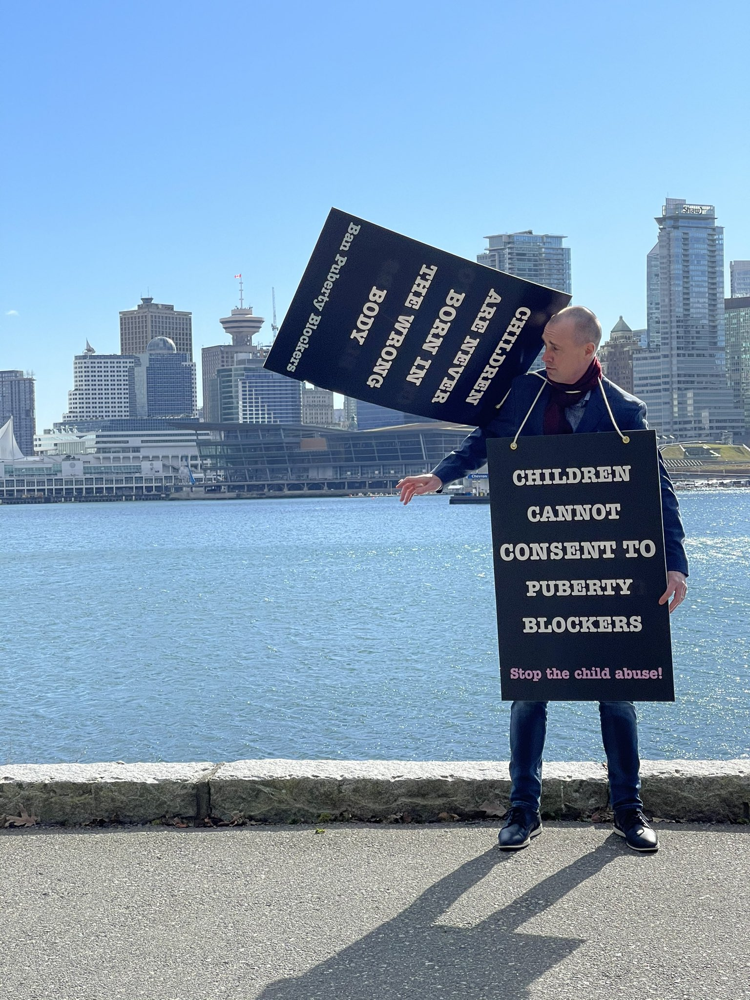
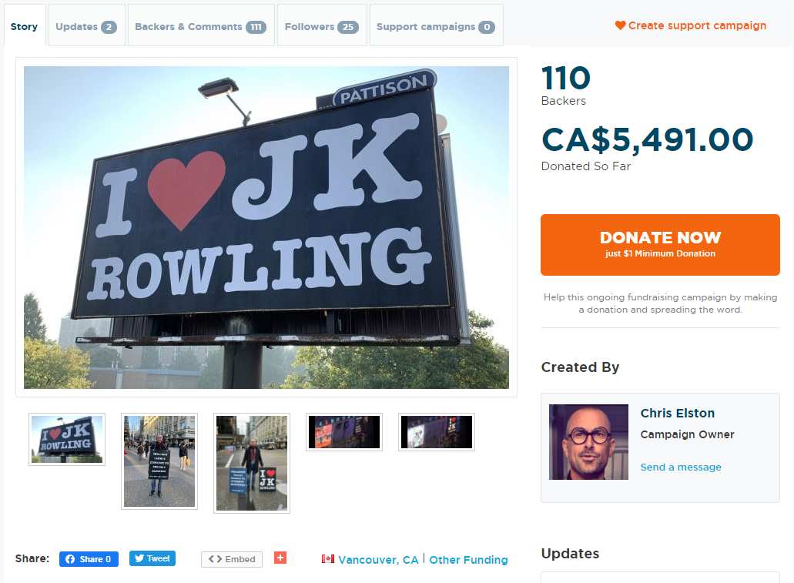
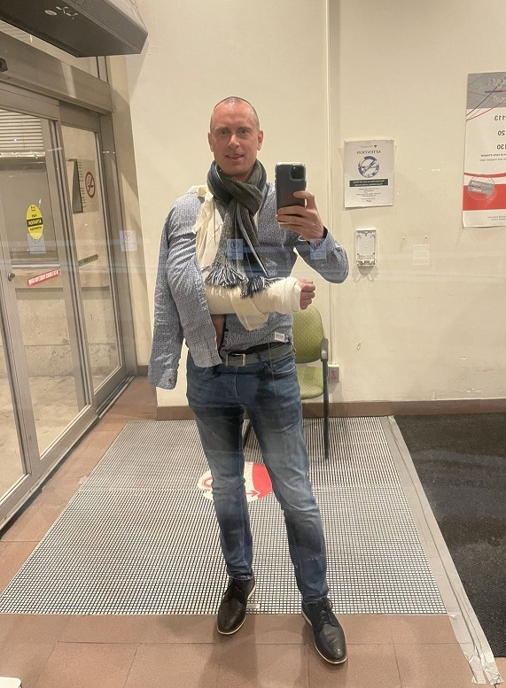

Chris Elston Update: Attacked by Antifa
March 19th, 2021
In early March, actually when I still had my twitter account, I wrote up a story on Chris Elston, a concerned father from almost exactly the same part of the world I am from, South Surrey. He was going on a billboard campaign to raise awareness on a particularly sinister campaign pushed by Globo Homo Schlomo, to put somewhat troubled children on "puberty blockers." As many have pointed out, there is no such thing as "puberty blockers," only permanent mutilation.
He's also at least so committed to this that he had no problem retweeting my "BCGoyNews" account.

Russia Today:
TDC_ARTICLE_START
A Canadian activist who traveled to Montreal to demonstrate against giving puberty blockers to children was attacked by black-clad assailants who allegedly punched him, stole his camera, and broke his arm him with a traffic cone.
The incident occurred on Friday night in downtown Montreal, where Vancouver resident Chris Elston said he was having a “peaceful conversation” with a local man when about seven “thugs” swarmed him. Video footage shows several assailants, including at least one woman, pursuing Elston and another man, hitting them with traffic cones and demanding that they leave the area. At one point, one of the attackers hurls a yellow substance toward the men.

Elston said he caught the footage on his smartphone after his sign and bodycam were stolen by the attackers. He said the initial assault included punches to his face and the back of his head. His forearm was broken from blocking blows with the traffic cones, and he suffered a popped vein in his hand and a fat lip. “If criminals think an assault is going to slow me down, they're dead wrong,” Elston said on Twitter. He added, “Sticks and stones may break my bones, but children still can't consent to puberty blockers.” TDC_ARTICLE_STOP  Chris Elston is a personal hero of mine. I'm not saying that as a meme. This man started with literally nothing. No allies, nobody to come with him. No one to even film him. He had two boards and a gopro, and he started going to downtown Vancouver, universities, and everywhere else to spread awareness that these disgusting perverts are attempting to mutilate children through rendering them infertile at age 13. Okay, he doesn't say it like that, but he doesn't have to. This man is a hero.  His arm was flat out broken, specifically one of the forearm bones. But I think one other thing he shows is that the faggots who say "you can't do street activism because xyz," are just that, faggots. This man has absolutely no protection, and he goes by himself to antifa places, and this was the first time he got assaulted. The other videos he's gotten are invaluable. I don't know how much longer he'll be allowed his twitter account. Methinkns until he starts going from 20 likes per tweet to 200, but for now it's fantastic. Calls to action, the whole nine yards. He posted the above image to his twitter account today, and you know what? I think I'm going to call her tomorrow.I’m all good. Just waiting for an x-ray on my forearm but I’ll be fine. I used it to block several pylon hits.
— 🅑🅘🅛🅛🅑🅞🅐🅡🅓 🅒🅗🅡🅘🅢 ❤️🇨🇦 (@christophelston) March 13, 2021
They took my sign with the bodycam but I managed to film them with my phone during the tail end of the assault. pic.twitter.com/CELzJ31Zef